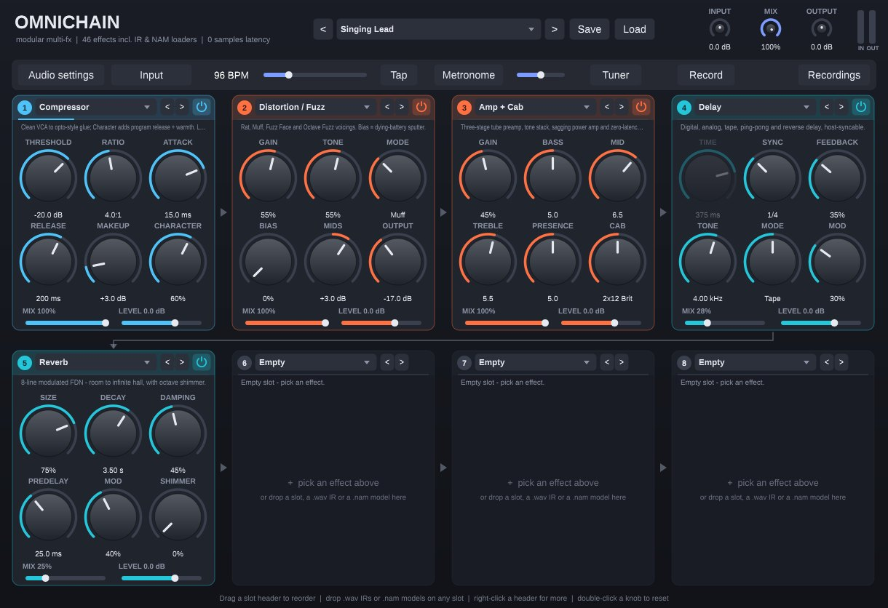
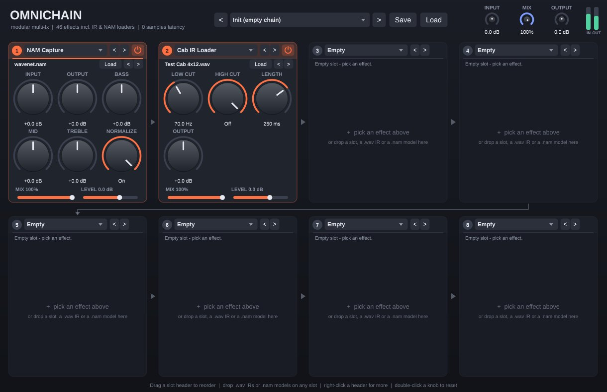
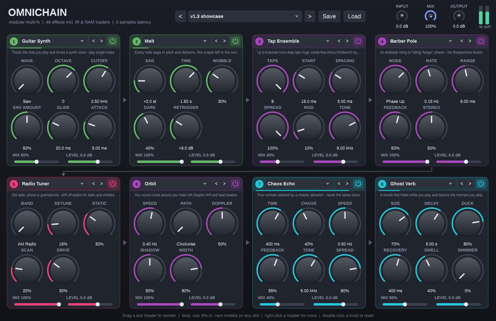

46 effects
From noise gate to granular clouds. Any effect can go in any slot.
Real gear, free
Load Neural Amp Modeler captures and speaker-cabinet IRs, or drop them straight on a slot.
0 samples latency
No lookahead anywhere, so playing live through it feels like a pedal. A full chain uses 1–2 % of one CPU core.
39 presets
Clean, crunch, metal, ambient, glitch, plus Holdsworth- and Cisneros-style tones.
Download
Each download has every format for that system. Install the one your DAW uses, or several. They don't conflict.
Windows
- Formats
- VST3, CLAP, standalone app
- Works in
- FL Studio, Ableton Live, Cubase, Reaper, Studio One, Bitwig, Cakewalk, Reason
- Needs
- Windows 10 or 11, 64-bit
macOS
- Formats
- AU, VST3, CLAP, standalone app
- Works in
- Logic Pro, GarageBand, MainStage, Ableton Live, Reaper, Studio One, Bitwig
- Needs
- macOS 11 or later, Apple Silicon or Intel
Linux
- Formats
- VST3, LV2, CLAP, standalone
- Works in
- Reaper, Bitwig, Ardour, Carla, Qtractor
- Needs
- 64-bit x86, glibc 2.35 or later
Pro Tools only loads Avid's AAX format, which isn't available to free projects. Use the standalone app, or host OmniChain inside a plugin wrapper that Pro Tools can load. Older versions and release notes are on GitHub Releases.
No DAW? Use the app
OmniChain also runs on its own on a Windows or Mac laptop. Plug in your guitar interface, pick it in Audio settings and play. The app adds a tuner, a metronome, tap tempo and a recorder that saves what you play as a WAV file.
On Windows it supports ASIO drivers for the lowest latency with guitar interfaces.
The Windows installer can also add the VST3 and CLAP plugins. On a Mac, drag the app to Applications, then right-click it and choose Open the first time.

The effects
The colours match the slot colours inside the plugin. Every effect is free to use, automate and save in presets.
Dynamics
- Noise Gate
- Compressor VCA to opto
- Transient Shaper
- Limiter / Clipper
- Slow Swell auto volume swells
Drive & amp
- Overdrive with clean blend
- Distortion / Fuzz Rat, Muff, Fuzz Face, octave fuzz
- Amp + Cab
- Tape Machine
- NAM Capture loads .nam files
- Cab IR Loader loads .wav IRs
Filter & EQ
- EQ
- Wah Pedal Cry Baby, Vox, wide, bass
- Envelope Filter
- Ladder Filter
- Talk Box
- Step Filter tempo-synced patterns
Modulation
- Chorus
- Tap Ensemble 8-tap Holdsworth-style chorus
- Flanger
- Phaser
- Barber Pole endlessly rising
- Tremolo / Pan
- Uni-Vibe
- Rotary Speaker
- Ring Modulator
- Orbit circles your head
Pitch
- Octaver
- Pitch Shifter
- Harmonic Arp
- Guitar Synth follows your notes
- Melt notes sag like warm tape
Time & space
- Delay digital, analog, tape, ping-pong, reverse
- Reverb with shimmer
- Spring Reverb
- Spiral Delay
- Ghost Verb blooms when you stop
- Chaos Echo
Creative & lo-fi
- Freeze Pad
- Amp Feedback
- Sympathetic Strings
- Granular Cloud
- Glitch Grid
- Bitcrusher
- Radio Tuner
Utility
- Stereo Imager width, mono bass, Haas, pan
Real amps, free
Drag a Neural Amp Modeler capture (.nam) or a cabinet impulse response (.wav) from your file manager onto any slot. Thousands of free captures of real amps, pedals and cabinets are on TONE3000.
Use the arrows next to Load to step through a whole folder of captures while you play.

Install
Windows
- Right-click the zip, choose Properties, tick Unblock, then extract it.
- Copy the
OmniChain.vst3folder toC:\Program Files\Common Files\VST3\. - Rescan plugins in your DAW. In FL Studio: Options, Manage plugins, Find installed plugins.
macOS
- Copy
OmniChain.componentto~/Library/Audio/Plug-Ins/Components/andOmniChain.vst3to~/Library/Audio/Plug-Ins/VST3/. - OmniChain isn't notarised by Apple, so allow it once in Terminal:
xattr -dr com.apple.quarantine ~/Library/Audio/Plug-Ins/Components/OmniChain.component ~/Library/Audio/Plug-Ins/VST3/OmniChain.vst3 - Open Logic or your DAW. OmniChain is under Audio FX.
Linux
- Extract and copy the formats you need:
tar xzf OmniChain-Linux.tar.gz && cd OmniChain-Linux mkdir -p ~/.vst3 ~/.lv2 ~/.clap cp -r OmniChain.vst3 ~/.vst3/ cp -r OmniChain.lv2 ~/.lv2/ cp OmniChain.clap ~/.clap/ - Rescan plugins in your host.

Sounds you won't find on a pedalboard
Guitar Synth turns single notes into a synth voice. Melt bends every note down like a tape left in the sun. Ghost Verb stays quiet while you play and swells when you stop. Orbit flies your sound around your head.
Open the preset menu and try Chaos Garden, Melting Clock or Orbiting Satellite.